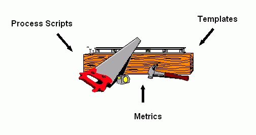

ÔÚRUPÖнáºÏPSPIncorporating
the Personal Software Process into the Rational Unified Process
|
|
Figure 1: Important Factors in Software
Development Projects
|

Why do projects fail? There have been many
books and research articles on the subject, but it is safe to say
that failure stems from both external and internal factors. An external
factor, for example, might be that the product is already "old"
and useless by the time it is developed; that is, it is based on
out-of-date technology that makes the product cumbersome to use.
Other possible external factors include key personnel leaving the
project or customers changing the requirements specifications. These
are all factors that you, as a software developer, cannot control.
¡¡¡¡ÎªÊ²Ã´Õâ¸öÏîÄ¿»áʧ°ÜÄØ£¿¹ØÓÚÕâ¸ö»°ÌâÓкܶàÑо¿ÂÛÎĺÍÊé¼®£¬¿É¿¿µÄ˵·¨ÊÇʧ°ÜͬʱԴÓÚÄÚ²¿ºÍÍⲿÒòËØ¡£ÀıÈ磬ÍⲿÒòËØ¿ÉÄÜÊDzúÆ·¿ª·¢³öÀ´Ê±£¬ÒѾ¹ıÓڳ¾ɶøÇÒûʲô¼ÛÖµÁË£¬Ò²¾ÍÊÇ˵£¬¹ıʱµÄ¼¼Êõµ¼Ö²úÆ·ÄÑÓÚʹÓ㨿ÉÓÃĞԺܲ¡£ÁíÍâ¿ÉÄܵÄÍⲿÒòËØ»¹°üÀ¨ÏîÄ¿ºËĞÄÈËÔ±µÄÀëÖ°ºÍ¿Í»§±ä¸üĞèÇó˵Ã÷µÈ¡£¶ÔÓÚÈí¼ş¿ª·¢ÕßÀ´Ëµ£¬ÕâĞ©ÒòËØÊÇÎŞ·¨¿ØÖƵġ£
One factor that you can control, however, is
an internal one: the software development process. A defined and
mature process usually results in good products. Furthermore, using
such a process becomes more and more important as systems continue
to grow in complexity and size.
¡¡¡¡È»¶øÓиö¾ø¶Ô¿ÉÒÔ¿ØÖƵÄÄÚ²¿ÒòËØ£¬¾ÍÊÇÈí¼ş¿ª·¢¹ı³Ì¡£ÒѶ¨ÒåµÄ³ÉÊìµÄ¹ı³Ìͨ³£Êä³öºÃµÄÈí¼ş²úÆ·¡£¶øÇÒËæ×ÅϵͳԽÀ´Ô½¸´ÔÓºÍÅÓ´ó£¬ÕâÑùµÄ¹ı³Ì»áÔ½À´Ô½ÖØÒª¡£
Software Development Processes
Èí¼ş¿ª·¢¹ı³Ì
Today, there are a number of software development
processes: the Capability Maturity Model (CMM), the Rational Unified
Process (RUP® ), the Personal Software Process (PSP),
and the Team Software Process (TSP), to name a few. Most of these
processes focus on just one dimension regarding support for process
improvement. The RUP and CMM, for example, provide support for software
development at an organizational level; the TSP provides support
at a team level; and the PSP provides it at an individual level.
¡¡¡¡ÏÖÔÚ´æÔÚ×Å´óÁ¿µÄÈí¼ş¿ª·¢¹ı³Ì£¬È磺ÄÜÁ¦³ÉÊì¶ÈÄ£ĞÍ£¨CMM£©£¬Rationalͳһ¿ª·¢¹ı³Ì£¨RUP£©£¬¸öÈËÈí¼ş¹ı³Ì£¨PSP£©ºÍĞ¡×éÈí¼ş¹ı³Ì£¨TSP£©µÈµÈ¡£´ó¶àÊı·½·¨¹Ø×¢£¨Ö§³Ö£©µÄ½¹µã½ö½öÊÇÒ»¸ö²ã´ÎÉϵĹı³Ì¸Ä½ø¡£ÀıÈ磬RUPºÍCMMÔÚ×éÖ¯¼¶µÄ²ã´ÎÉÏÌṩÈí¼ş¿ª·¢Ö§³Ö£¬TSPÌṩÍŶӼ¶±ğµÄÖ§³Ö£¬PSPÌṩ¸öÈ˼¶±ğµÄÖ§³Ö¡£
Processes like the RUP and the TSP support teams
and organizations to develop software but do not support the software
processes of the individuals in the organizations. The focus and
effort of coordinating work activities at a team level leaves out
guidelines for the workers. As a consequence, it is more or less
up to the individual worker to find ways to monitor, control, and
improve his own personal software development process.
¡¡¡¡ÏóRUPºÍTSPÖ§³Ö×éÖ¯ºÍÍŶӼ¶±ğµÄÈí¼ş¿ª·¢È´²»ÄÜÊÊÓ¦×éÖ¯ÖиöÌåµÄÈí¼ş¹ı³Ì¡£ËüÃǹØ×¢ºÍÖÂÁ¦ÓÚÍŶӼ¶±ğĞͬ¹¤×÷µÄ»î¶¯È´ºöÂÔÁ˶ԸöÌåµÄÖ¸µ¼¡£µ¼Öµĺó¹û¾ÍÊÇÖ»ÄÜ»ò¶à»òÉÙÒÀ¿¿¸öÌå×Ô¼ºÈ¥Ñ°ÕÒ¼à²â¡¢¿ØÖƺ͸ĽøÆäÈí¼ş¿ª·¢¹ı³ÌµÄ·½·¨¡£
The Rational Unified Process (RUP)
Rationalͳһ¿ª·¢¹ı³Ì
The RUP defines process elements such as workers,
activities, and artifacts that, when combined properly, will help
an organization conduct a software project efficiently. The process
itself, however, does not provide any magical solutions. It is the
workers -- actual human beings -- who are the driving force of the
project. Without human participants, no process or tool in the world
could alone finish a software project. The end results -- whether
the project finished on time and whether the released system was
of high quality -- depend to a great extent on the quality of participants'
individual software processes.
¡¡¡¡RUP¶¨ÒåÁËһϵÁеĹı³ÌÔªËØ£¬Èç½ÇÉ«¡¢»î¶¯ºÍ²úÎͨ¹ıÊʵ±µÄ×éºÏ£¬ÄÜ°ïÖú×éÖ¯ÓĞЧµØ¹ÜÀíÈí¼şÏîÄ¿¡£È»¶ø£¬¹ı³Ì±¾Éí²¢²»ÌṩÉñÆæµÄ³¬Ë®Æ½½â¾ö·½°¸£¬Ö»ÓнÇÉ«££Êµ¼Ê´æÔÚµÄÈË££²ÅÊÇÏîÄ¿µÄÇı¶¯Á¦¡£Ã»ÓĞÈËÀàµÄʵ¼ù£¬ÊÀÉÏÈκιı³Ì»òÕß¹¤¾ß¶¼ÎŞ·¨µ¥¶ÀÍê³ÉÒ»¸öÈí¼şÏîÄ¿¡£¹é¸ù½áµ×£¬ÎŞÂÛÊÇÏîÄ¿°´Ê±Íê³É»¹ÊÇ·¢²¼¸ßÖÊÁ¿µÄϵͳ£¬¶¼ºÜ´ó³Ì¶ÈÉÏÒÀÀµÓÚ²ÎÓëÕ߸öÌåÈí¼ş¹ı³ÌµÄÖÊÁ¿¡£
The RUP provides a knowledge base of information
that helps workers do a better job. It differs from the approach
used in the PSP, however, which provides the software engineer with
more explicit support. Instead, the RUP provides a framework for
how, what, when, and by whom various activities should take place
in order to get a satisfying result. In other words, an organization
using RUP will do well if it has competent and experienced people
-- and will certainly do better than an organization with incompetent
and inexperienced employees that attempts to use the RUP. It is
always important for organizations with inexperienced people to
quickly improve their employees' skills in order to save time and
money. The RUP does not provide an answer to this issue of employee
competence.
¡¡¡¡RUPÌṩµÄÊÇ°ïÖúÈËÃǸü³öÉ«µØ¹¤×÷µÄ֪ʶ»ù´¡¡£²»Í¬ÓÚPSPÌṩ¸øÈí¼ş¹¤³Ìʦֱ½ÓÖ§³ÖµÄʹÓÃ;¾¶£¬RUP¹æ¶¨µÄÊǸ÷ÖÖ¸÷ÑùµÄ»î¶¯·¢Éúʱ£¬ĞèÒªÔõÑù×ö¡¢×öʲô¡¢ºÎʱ×ö¡¢ÓÉË×öÒÔ»ñµÃÂúÒâµÄ³É¹ûµÄÒ»¸ö¿ò¼Ü¡£»»¾ä»°Ëµ£¬Ê¹ÓÃRUPµÄ×éÖ¯Èç¹ûÓµÓкϸñµÄºÍÓоÑéµÄÈËÔ±ÄÜ×÷µÄÏ൱ºÃ£¬¶øÇÒÏÔȻҪ±ÈÄÇĞ©Ô±¹¤¾Ñé²»×ã¡¢ÄÜÁ¦²»¹»Ò²ÊÔĞĞRUPµÄ×éÖ¯×öµÃ¸üºÃ¡£ÎªÁ˽Úʡʱ¼äºÍ³É±¾£¬¶ÔÓÚÄÇĞ©Ô±¹¤¾Ñé²»×ãµÄ×éÖ¯À´Ëµ£¬¾¡¿ìµØ¸ÄÉÆÔ±¹¤¼¼ÄÜÊǷdz£ÖØÒªµÄ¡£Òź¶µÄÊÇ£¬RUPÔÚÈçºÎ½â¾öÔ±¹¤ÄÜÁ¦Õâ¸öÎÊÌâÉÏûÓиø³ö´ğ°¸¡£
The Personal Software Process (PSP)
¸öÌåÈí¼ş¹ı³Ì
The PSP, in contrast, does address this employee
improvement issue. The PSP is a framework for software process improvement
for the individual software engineer. Watts Humphrey at the Software
Engineering Institute (SEI) in Pittsburgh, Pennsylvania, developed
it in 1995. The PSP provides metrics, process-steps, and templates
that help an engineer improve her software engineering skills. Research
results indicate significant process improvements among software
engineers applying the PSP. Factors like productivity, number of
injected defects, and time and size estimations tend to improve
when the PSP is applied.
¡¡¡¡Ïà±È֮ϣ¬PSPÔòÁ¢×ãÓÚÔ±¹¤ÄÜÁ¦µÄ¸Ä½ø¡£PSPÊÇÈí¼ş¹¤³Ìʦ¸öÌåÈí¼ş¹ı³Ì¸Ä½øµÄÖ¸µ¼¿ò¼Ü£¬ÊDZöϦ·¨ÄáÑÇÖİ-Æ¥×ȱ¤µÄÈí¼ş¹¤³Ìѧ»á³ÉÔ±Watts
Humphrey1995Äê´´Á¢µÄ¡£PSPÌṩÁËһЩ¶ÈÁ¿±ê×¼¡¢²Ù×÷²½ÖèºÍÄ£°å°ïÖú¹¤³Ìʦ¸Ä½ø¸öÈ˵ÄÈí¼ş¹¤³Ì¼¼ÇÉ¡£Ñо¿½á¹ûÏÔʾÈí¼ş¹¤³ÌʦӦÓÃPSPºóÈí¼ş¹ı³ÌÓĞÏÔÖø¸Ä½ø£¬ÔÚÉú²úÁ¦¡¢È±ÏİÒıÈëµÄÊıÁ¿¡¢Ê±¼äºÍ¹æÄ£µÄ¹ÀËãµÈ·½ÃæÒ²ÓĞÃ÷ÏÔ¸ÄÉÆ¡£
Figure 2 shows the PSP's process maturity levels.
PSP0 is the most basic level, enabling the software engineer to
establish a ground floor development process, whereas PSP3 is the
most complex, with a number of metrics and templates available to
the software engineer.
¡¡¡¡Í¼¶şÏÔʾPSP¹ı³ÌµÄ³ÉÊì¶ÈµÈ¼¶¡£PSP0ÊÇ×î»ù´¡µÄ£¬Ê¹Èí¼ş¹¤³ÌʦÄܹ»½¨Á¢»ù±¾µÄ¿ª·¢¹ı³Ì£¬¶øPSP3ÊÇ×Ôӵģ¬Ìṩ´óÁ¿ÓĞЧµÄ¶ÈÁ¿±ê×¼ºÍÄ£°å¡£

Figure
2: The PSP's Process Maturity Levels
ͼ2£ºPSP³ÉÊì¶ÈµÈ¼¶
How the PSP Can Support the RUP
PSPÈçºÎÖ§³ÖRUP
In light of these positive results from applying
the PSP, we might assume that similar process improvement awareness
in the RUP would help workers improve their own processes, thereby
enhancing the results of an organization as a whole. If you study
and compare the PSP with the RUP, it becomes obvious that the PSP
has process improvement concepts that can be applied in the RUP.
¡¡¡¡ÕıÈçÔËÓÃPSPËùÄÜ»ñµÃµÄ»ı¼«Ğ§¹û£¬ÎÒÃÇ¿ÉÒÔÈÏΪRUPÖĞÀàËƵĹı³Ì¸Ä½øÒâʶ½«°ïÖúʹÓÃÕ߸ĽøËûÃÇ×Ô¼ºµÄ¹ı³Ì£¬´Ó¶øÌá¸ß×éÖ¯ÕûÌåµÄ¹ı³Ì¸Ä½øЧ¹û¡£¼ÙÈçÄãÈ¥Ñо¿²¢±È½ÏPSPºÍRUP£¬»áºÜÈİÒ×·¢ÏÖPSP¾ßÓĞ¿ÉÔËÓÃÓÚRUPÖеĹı³Ì¸Ä½ø¸ÅÄî¡£
The main advantages of incorporating the PSP into
the RUP are as follows:
¡¡¡¡ÔÚRUPÖĞÈÚºÏPSPµÄÖ÷ÒªºÃ´¦ÈçÏ£º
- Task and schedule planning template.
The RUP provides limited support to team members on how to manage
work within an iteration. In the RUP, iterations can last for
weeks or months. The project manager (or other lead) assigns tasks
and responsibilities to project participants. It is up to the
individual worker, however, to plan his work during the iteration.
The RUP does not provide any support for this. The PSP, in contrast,
provides task and schedule planning templates to monitor project
progress. With these tools, software engineers can track their
progress and know when they are slipping behind schedule. They
can then inform the project manager about this status so that
appropriate corrective actions can be taken.
ÈÎÎñºÍ½ø¶È¼Æ»®Ä£°å RUPÔÚÒ»´Îµü´ú¹ı³ÌÖжÔÍŶӳÉÔ±ÈçºÎ¿ØÖƹ¤×÷½öÌṩÓĞÏŞµÄÖ§³Ö£¬¶øRUPµÄÒ»´Îµü´ú¿ÉÄܳÖĞøÊıÖÜ»òÊıÔ¡£ÏîÄ¿¾Àí£¨»òÆäËüÁìµ¼Õߣ©·ÖÅäÈÎÎñºÍÖ°Ôğ¸øÏîÄ¿×é³ÉÔ±£¬µ«ÔÚµü´úÖĞÈçºÎ¼Æ»®ÔòÈ¡¾öÓÚÿ¸öÏîÄ¿×é³ÉÔ±×Ô¼º¡£¶Ô´ËRUPδÌṩÈκÎÖ§³Ö¡£Ïà±È֮ϣ¬PSPÌṩÁËÈÎÎñºÍ½ø¶È¼Æ»®Ä£°åÓÃÒÔ¼à¿ØÏîÄ¿µÄ½øÕ¹¡£ÀûÓÃÕâĞ©¹¤¾ß£¬Èí¼ş¹¤³ÌʦÄܹ»×·×ÙËûÃǵĽø³Ì£¬ÖªµÀʲôʱºò¿ªÊ¼ÂäºóÓÚ½ø¶È£¬²¢ÇÒ½«Æäͨ±¨ÏîÄ¿¾ÀíÒÔ²ÉÈ¡ÏàÓ¦µÄ¾ÀÕı´ëÊ©¡£ - Checklists based on personal defect data.
The workers in the RUP do not perform reviews based on personal
defect data. Rather, they have checklists based on the most typical
defect types collected in the organization. As a consequence,
software engineers could be looking for defect types they never
inject. The PSP, on the other hand, has checklists that are based
on personal defect data. So software engineers will be looking
for defect types they usually inject.
»ùÓÚ¸öÌåȱÏİÊı¾İµÄ¼ì²é±í RUP½ÇÉ«²»Ö´ĞĞ»ùÓÚ¸öÈËȱÏİÊı¾İµÄ¸´²é¡£ËûÃÇÖ»ÓĞ´ÓÕû¸ö×éÖ¯ÊÕ¼¯µÄ×îµäĞÍȱÏİÀàĞ͵ļì²é±í¡£Óɴ˵¼ÖµĽá¹ûÊÇÈí¼ş¹¤³ÌʦÃDzéÕÒµÄȱÏİÀàĞÍÒ²ĞíÊÇËûÃÇ´ÓÀ´²»»áÒıÈëµÄ¡£Ïà±È֮ϣ¬PSP¾ßÓĞ»ùÓÚ¸öÌåȱÏİÊı¾İµÄ¼ì²é±í£¬Òò´ËÈí¼ş¹¤³Ìʦ²éÕÒµÄȱÏİÀàĞÍÕıÊÇËûÃǾ³£Éæ¼°µÄ¡£ - Templates to record ideas for, and help
move toward, process improvement.
The RUP does not provide templates for writing down ideas for process improvement, but the PSP does provides templates for software engineers to record ideas as well as tasks to perform later on in the project.
¼Ç¼¹ı³Ì¸Ä½øÏë·¨ÒÔ¼°°ïÖúÍƶ¯¹ı³Ì¸Ä½øµÄÄ£°å RUP²»Ìṩģ°å¼Ç¼¹ØÓÚ¹ı³Ì¸Ä½øµÄÏë·¨£¬PSPÈ´ÌṩÕâÑùµÄÄ£°åÈÃÈí¼ş¹¤³ÌʦÏó¼Ç¼ÏîÄ¿ÏÂÒ»²½ÒªÍê³ÉµÄÈÎÎñÒ»Ñù¼ÇÔØÕâĞ©Ïë·¨¡£ - Metrics to help improve process.
The RUP does not provide predefined metrics that software engineers
can use to monitor and control their software processes. Before
each new project, metrics must be defined and explained to all
project participants. There is no guarantee, however, that the
defined metrics offer the kind of information a software engineer
wants or needs in order to monitor his software development process.
In these cases, it is up to the software engineer to define and
apply appropriate metrics. The PSP, in contrast, has a number
of metrics that provide information on improving the personal
software development process.
°ïÖú¸Ä½ø¹ı³ÌµÄ¶ÈÁ¿±ê×¼£¨·½·¨£© RUP²»Ìṩ¸øÈí¼ş¹¤³ÌʦԤÏȶ¨ÒåºÃµÄ¼à¿ØÈí¼ş¹ı³ÌµÄ¶ÈÁ¿±ê×¼£¨·½·¨£©¡£Æäʵÿ¸öĞÂÏîÄ¿¿ªÊ¼Ç°£¬¶ÈÁ¿±ê×¼£¨·½·¨£©±ØĞ붨Òå²¢ÇÒ½âÊ͸øËùÓĞÏîÄ¿×é³ÉÔ±¡£È»¶ø£¬¸Ã¶ÈÁ¿±ê×¼£¨·½·¨£©²»Äܱ£Ö¤ÌṩÁËÈí¼ş¹¤³ÌʦΪ¼à¿ØÆäÈí¼ş¿ª·¢¹ı³ÌËùÏ£ÍûµÄºÍĞèÒªµÄÄÇÀàĞÅÏ¢¡£ÔÚÕâÖÖÇé¿öÏ£¬¾ÍÒªÒÀ¿¿Èí¼ş¹¤³Ìʦ×Ô¼º¶¨ÒåºÍÔËÓÃÊʵ±µÄ¶ÈÁ¿±ê×¼£¨·½·¨£©¡£Ïà±È֮ϣ¬PSPÓµÓĞĞí¶à¶ÈÁ¿±ê×¼£¨·½·¨£©£¬Ìṩ´óÁ¿¸öÌåÈí¼ş¿ª·¢¹ı³Ì¸Ä½øµÄĞÅÏ¢¡£
Unfortunately, the PSP material cannot be applied
directly by workers using RUP; it must be modified so that it suits
the RUP context. If every RUP project were conducted in the same
manner -- that is, if all artifacts, activities, workflows, lifecycle
models, and so on, never changed -- then the PSP material would
only need to be adapted once. This is not the case, however. Every
project is unique and needs to be conducted in a particular way
in order to be successful. This means that the RUP material -- activities,
artifacts, and workflows -- must be modified and defined for the
particular project at hand.
¡¡¡¡¿ÉϧµÄÊÇ£¬PSPµÄÄ£ĞͲ»ÄÜÖ±½Ó±»RUP½ÇÉ«ÔËÓã¬Ëü±ØĞë¾¹ıĞŞ¸Ä²ÅÄÜÊʺÏRUP»·¾³¡£¼ÙÈçÿ¸öRUPÏîÄ¿¶¼ÒÔͬÑùµÄ·½Ê½¿ØÖÆ--¼´¼ÙÈç²úÎ»î¶¯£¬¹¤×÷Á÷£¬ÉúÃüÖÜÆÚÄ£Ğ͵ȵȴÓÀ´¶¼²»»á±ä¸ü--ÄÇôPSPÄ£ĞÍÖ»ĞèĞŞ¸ÄÒ»´Î¾Í¿ÉÒÔÊÊÓÃÁË¡£È»¶øÕâÊDz»¿ÉÄܵģ¬ÒòΪÿ¸öÏîÄ¿¶¼ÊÇΨһµÄ£¬ÎªÁ˳ɹ¦µØÍê³É¶¼ĞèÒªÓÃÌض¨µÄ·½Ê½À´¹ÜÀí¡£ÕâÒâζ×ÅRUPµÄ¸÷½¨Ä£ÔªËØ--»î¶¯,
²úÎï,¼°¹¤×÷Á÷--ÔÚÿ¸ö¼´½«ÊµÊ©µÄÌض¨µÄÏîÄ¿Öж¼±ØĞëĞŞ¸ÄºÍ¶¨Òå¡£
PSP Toolboxes for RUP Personnel
RUP³ÉÔ±µÄPSP¹¤¾ßÏä
To address the opportunity to support the RUP
with the PSP, we defined "PSP Toolboxes" for workers whose
tasks are part of both processes: those who do design, code, and
test activities. The toolboxes contain process scripts, templates,
and metrics (see Figure 3) for workers using the RUP to apply, enabling
them to analyze and control their software development processes.
¡¡¡¡ÎªÁ˾ö¶¨ÓÃPSPÖ§³ÖRUPµÄʱ»ú£¬ÎÒÃǸøÄÇĞ©ÔÚÕû¸ö¹ı³ÌÖге£²¿·ÖÈÎÎñ£ºÉè¼Æ£¬±àÂëºÍ²âÊԻµÄ½ÇÉ«¶¨ÒåÁË¡°PSP¹¤¾ßÏ䡱¡£¸Ã¹¤¾ßÏä°üº¬¹ı³Ì½Å±¾¡¢Ä£°å£¬ÒÔ¼°RUP½ÇÉ«ÊÊÓõĶÈÁ¿±ê×¼£¨·½·¨£©£¨¼ûͼ3£©£¬Ê¹ËûÃÇÄÜ·ÖÎöºÍ¿ØÖÆ×Ô¼ºµÄÈí¼ş¿ª·¢¹ı³Ì¡£

Figure
3: A PSP Toolbox with Process Improvement Elements for Workers Using
the RUP
ͼ3£ºRUP³ÉÔ±µÄPSP¹ı³Ì¸Ä½ø»ù´¡¹¤¾ßÏä
We designed unique PSP Toolboxes for each of five
workers defined in the RUP: Implementer, Integrator, Test Designer,
Tester, and Designer. They all work in PSP-related activities
and, furthermore, they were perceived as the main candidates for
applying the PSP material. There are other workers in the RUP who
also work with PSP activities, but to a lesser degree. For example,
the Capsule Designer deals with concurrency issues, and can
be viewed as a narrower version of the Designer. As a consequence,
the work was restricted to defining PSP Toolboxes for the main worker
categories mentioned above. It should be noted, however, that every
worker in RUP ought to have a process improvement framework of his
own, specially defined for that individual worker's needs and work
environment. As the saying goes, however, that is another story;
we will not address that issue here.
¡¡¡¡ÎÒÃǸøRUP¶¨ÒåµÄ5ÖÖ½ÇÉ«£ºÊµÏÖÕߣ¬¼¯³ÉÕߣ¬²âÊÔÉè¼ÆÕߣ¬²âÊÔÕߣ¬ÒÔ¼°Éè¼ÆÕ߶¼ÉèÖÃÁËÆä¶ÀÓеÄPSP¹¤¾ßÏä¡£ËûÃÇ´ÓÊÂPSPÏà¹ØµÄ»î¶¯£¬¶øÇÒËûÃÇÓ¦¸Ã×÷ΪÔËÓÃPSPÄ£Ğ͵ÄÖ÷ÒªµÄºòÑ¡¶ÔÏó¡£¾¡¹ÜRUPÖĞÒ²ÓĞÆäËûһЩ½ÇÉ«´ÓÊÂPSPÏà¹ØµÄ»î¶¯£¬µ«ÊÇÔÚÏà¶Ô´ÎÒªµÄ²ã´ÎÉÏ£¬±ÈÈç´¦Àí²¢·¢Ê¼şµÄ¸ÅÒªÉè¼ÆÕߣ¬ËûÃÇ¿ÉÒÔ±»µ±×÷¾Ö²¿Éè¼ÆÈËÔ±¡£Òò´Ë£¬¶¨ÒåPSP¹¤¾ßÏäÏŞÖÆÔÚÒÔÉÏÌá¼°µÄÖ÷Òª½ÇÉ«Àà±ğ¡£µ«Ó¦¸ÃÖ¸³ö£¬RUPµÄÿÖÖ½ÇÉ«¶¼Ó¦¸ÃÓĞÒ»¸ö×Ô¼ºµÄ¹ı³Ì¸Ä½ø¿ò¼Ü£¬ÌرğµØ¶¨ÒåÄÇĞ©¸ö±ğ½ÇÉ«µÄĞèÇóºÍ¹¤×÷»·¾³¡£È»¶ø£¬ÕâÊÇÁíÍâµÄ»°Ì⣬Ôڴ˾Ͳ»ÔÙÉîÈëÌÖÂÛÁË¡£
Incorporating the PSP into the RUP
°ÑPSPÓ¦Óõ½RUPÖĞ
So far so good. We have defined PSP Toolboxes
for five chosen workers, and the material in those Toolboxes helps
the workers monitor and control their software development processes.
Two things, however, are still missing. First, a new process --
in this case the PSP -- should be introduced into an organization
in a proper way. Experience tells us that the general guidelines
presented in Table 1 are effective for process introductions.
¡¡¡¡µ½Ä¿Ç°ÎªÖ¹£¬ÎÒÃÇΪ5¸öÑ¡¶¨µÄ½ÇÉ«¶¨ÒåPSP¹¤¾ßÏ䣬¶øÇÒPSP¹¤¾ßÏäÖеÄÄ£ĞÍ¿ÉÒÔ°ïÖúËûÃǼàÊӺͿØÖÆËûÃǵÄÈí¼ş¿ª·¢¹ı³Ì¡£µ«ÊÇ»¹ÓĞÁ½¼şÊÂûÓĞ×ö¡£µÚÒ»£¬Ò»ÖÖеĹı³Ì--ÔÚÕâÀï¾ÍÊÇÖ¸PSP
-- ÒªÓÃÊʵ±µÄ·½Ê½°ÑËüÒıÈë×éÖ¯ÖĞ¡£¾Ñé¸æËßÎÒÃDZíÒ»ÖĞÁоٵÄһЩ¸ÅÀ¨ĞÔµÄÖ¸µ¼·½Õë¶ÔÓÚ¹ı³ÌµÄÒıÈëºÜÓĞЧ¡£
Table 1: Guidelines for Introducing a New Process into an Organization
|
Guideline |
Comments |
|
Involve the right people |
Competent people with decision power and interest in the new process should be involved. |
|
Document new routines |
Decide who will do what and when. The documents can be used as references if questions arise. |
|
Demand feedback |
Responsible people should solicit critiques and suggestions as the new process is introduced. The people applying the new process should feel that they can affect important decisions related to the introduction. |
|
Conduct post-mortem analyses |
At each stage of the introduction, stop and evaluate. Continuously try to improve the adaptation of the new process. |
±í1£º°Ñйı³ÌÒıÈë×éÖ¯ÖеÄÖ¸µ¼·½Õë
|
·½Õë |
˵Ã÷ |
|
°üÀ¨ºÏÊʵÄÈËÔ± |
Óоö²ßȨ²¢ÇÒ¶Ôйı³ÌÓĞĞËȤµÄÓĞÄÜÁ¦µÄÈËÓ¦¸Ã°üº¬ÆäÖĞ¡£ |
|
Îĵµ»¯Ğ¹æ³Ì |
¾ö¶¨Ëʲôʱºò×öʲô¡£µ±³öÏÖÎÊÌâʱÕâĞ©Îĵµ¿ÉÒÔÓÃÓڲο¼¡£ |
|
ÒªÇó·´À¡ |
ÔÚйı³ÌÒıÈëʱ£¬Ïà¹ØÔğÈÎÈËÓ¦¸Ã¿ÒÇë±ğÈËÌá³öÅúÆÀºÍ½¨Ò顣ʹÓÃйı³ÌµÄÈËÓ¦¸Ã¾õµÃËûÃÇÄܹ»¶Ô¹ı³ÌÒıÈëÓйصÄÖØÒª¾ö²ß²úÉúÓ°Ïì¡£
|
|
ʵʩʺó·ÖÎö |
ÔÚÒıÈëµÄÿ¸ö½×¶Î£¬ÉÔ¼ÓÍ£¶ÙÒÔÆÀ¼ÛÇ°ÆڵŤ×÷£¬²»¶ÏµØ³¢ÊԸĽøйı³ÌµÄÊÊÓ¦ĞÔ¡£ |
Second, the material in the PSP Toolboxes needs
to be adapted and adjusted for each individual project. For instance,
size metrics should be defined for software development projects,
so that team members can measure the size of the products and estimate
time and effort. It is impossible to know beforehand, however, whether
the worker in question will apply, for example, Lines Of Code (LOC)
or Function Points (FP), to name just two size metrics. The choice
of metric may depend on the type of application developed or the
tool used in the development effort. In addition, it is also impossible
to know beforehand if the worker in question will count physical
or logical lines if LOC is used, or what kinds of factors and weights
he or she will choose if FP is used. As this small example illustrates,
for any project, the people actually using the PSP Toolboxes should
be the ones who adapt the contents in those toolboxes.
¡¡¡¡µÚ¶ş£¬Õë¶Ôÿ¸ö²»Í¬µÄÏîÄ¿£¬PSP¹¤¾ßÏäÖеÄÄ£ĞÍÓ¦¸Ã×÷Êʵ±µÄµ÷Õû¡£ÀıÈ磬ҪÌáǰΪÈí¼ş¿ª·¢ÏîÄ¿¶¨Òå¶ÈÁ¿¹æÄ£µÄ±ê×¼ÒԱ㿪·¢×é³ÉÔ±¹ÀËã²úÆ·¹æÄ£¡¢Ê±¼äºÍ¹¤×÷Á¿¡£µ«ÊÇ£¬ÊÂÏȲ»¿ÉÄÜÖªµÀÓ¦Óùı³ÌÖĞÊÇ·ñ»áÓĞÎÊÌ⣬ÒÔ´úÂëĞк͹¦ÄܵãÕâÁ½ÖÖ¹æÄ£¶ÈÁ¿·½·¨£¨±ê×¼£©ÎªÀı£¬·½·¨£¨±ê×¼£©µÄÑ¡ÔñÒÀÀµÓÚÓ¦ÓóÌĞòµÄÀàĞÍ»òÕß¿ª·¢¹ı³ÌÖĞʹÓõŤ¾ß¡£ÁíÍ⣬Èç¹ûʹÓôúÂëĞжÈÁ¿£¬»¹ÊDz»¿ÉÄÜÔ¤ÏÈÖªµÀÓ¦¸Ãͳ¼ÆÎïÀíĞĞÊı»¹ÊÇÂß¼ĞĞÊıµÄÎÊÌ⣬¶øÓù¦Äܵã¶ÈÁ¿¾Í»á´æÔÚÑ¡ÓÃÄÄĞ©ÒòËغÍȨֵµÄÎÊÌâ¡£ÕıÈçÕâ¸öĞ¡Àı×Ó˵Ã÷µÄ£¬ÈκÎÏîÄ¿£¬Êµ¼ÊʹÓÃPSP¹¤¾ßÏäµÄÈ˶¼Ó¦¸Ã¶ÔÆäÖеÄÄÚÈݽøĞе÷Õû¡£
As Table 2 shows, the RUP does provide a number
of guidelines to consider when adapting the RUP to a new project.
¡¡¡¡Èç±í¶şËùʾ£¬RUPÌṩÁË´óÁ¿¹ØÓÚĞÂÏîÄ¿RUPµ÷ÕûµÄÖ¸µ¼·½Õ빩²Î¿¼¡£
Table 2: RUP Guidelines to Consider When Adapting the RUP for a New Project
|
RUP Guideline |
Comments |
|
Analyze project and organization |
Analyze the type of application to be developed, size of the project, and organizational factors. |
|
Define scope of project |
Define the workflows to be used in the project; decide which tools will be used. |
|
Describe iteration plans |
Decide activities and their order of application in the iterations. The process should be defined thoroughly. |
|
Update the project's processes |
Evaluate the RUP after each iteration. |
±í2£ºĞÂÏîÄ¿RUPµ÷ÕûµÄÖ¸µ¼·½Õë
|
·½Õë |
˵Ã÷ |
|
·ÖÎöÏîÄ¿ºÍ×éÖ¯ |
·ÖÎö¼´½«¿ª·¢µÄÏîÄ¿µÄÀàĞÍ¡¢¹æÄ£ºÍ×éÖ¯·½ÃæµÄÒòËØ¡£ |
|
¶¨ÒåÏîÄ¿µÄ·¶Î§ |
¶¨ÒåÏîÄ¿µÄ×÷ÒµÁ÷³Ì£»Ñ¡ÔñʹÓõŤ¾ß¡£ |
|
ÃèÊöµü´ú¼Æ»® |
È·¶¨Õû¸öµü´ú¹ı³ÌÖеĻÒÔ¼°ËüÃǵĴÎĞò¡£Õâ¸ö¹ı³ÌĞèÒª¾«È·µÄ¶¨Òå¡£ |
|
¸Ä½øÏîÄ¿¹ı³Ì |
ÿ´Îµü´ú¹ı³ÌÖ®ºó¶ÔRUP½øĞĞÆÀ¹À¡£ |
In order to adapt the PSP to fit nicely with the
RUP, it makes sense to consider the factors listed in Table 2 for
both processes. That way, when you prepare for a new project, both
the PSP and the RUP will be reviewed in the same areas and documented
in a similar way, thereby easing the incorporation of the PSP into
the RUP.
¡¡¡¡ÎªÁËʹPSPºÍRUPÍêÃÀµØ½áºÏÆğÀ´£¬Í¬Ê±Õë¶ÔÕâÁ½¸ö¹ı³Ì¿¼ÂÇ±í¶şÖĞËùÁгöµÄÒòËØÊǺÜÓĞÒâÒåµÄ¡£ÕâÑù£¬µ±Äã×¼±¸Ò»¸öĞÂÏîĿʱ£¬¾Í¿ÉÒÔÔÚÏàͬµÄ·¶Î§ÄÚͬʱ¿¼ÂÇPSPºÍRUP£¬²¢ÇÒÒÔÏàËƵķ½Ê½½«ËüÃÇÎĵµ»¯£¬´Ó¶øÇáËɵذÑPSP½áºÏµ½RUPÖ®ÖĞ¡£
For each of the factors listed in Table 2, Table
3 shows corresponding guidelines for adapting the PSP Toolboxes
to the RUP.
¡¡¡¡¶ÔÓÚÈçºÎʹPSP¹¤¾ßÊʺÏRUP¹ı³Ì£¬±í2¡¢3ÖеÄÿ¸öÒªËض¼ÌṩÁËÏàÓ¦µÄÖ¸µ¼¡£
Table
3: Guidelines for Adapting PSP Toolboxes to the RUP
(PSP guidelines in italics)
|
Guideline |
Comments |
|
Analyze project and organization |
Analyze the type of application to be
developed. |
|
Define scope of project |
Define the workflows to be used in the
project; decide which tools will be used. |
|
Describe iteration plans |
Decide activities and their order of application in the iterations. The process should be defined thoroughly. |
|
Update the project's processes |
Evaluate the RUP after each iteration. |
±í3£ºÊ¹PSP¹¤¾ßÊʺÏRUP¹ı³ÌµÄÖ¸µ¼·½Õë
£¨Ğ±Ìå×Ö±íʾPSPÖ¸µ¼·½Õ룩
|
·½Õë |
˵Ã÷ |
|
·ÖÎöÏîÄ¿ºÍ×éÖ¯ |
·ÖÎö¼´½«¿ª·¢µÄÏîÄ¿µÄÀàĞÍ¡£ |
|
¶¨ÒåÏîÄ¿µÄ·¶Î§ |
¶¨ÒåÏîÄ¿µÄ×÷ÒµÁ÷³Ì£»Ñ¡ÔñʹÓõŤ¾ß¡£ |
|
ÃèÊöµü´ú¹æ»® |
È·¶¨Õû¸öµü´ú¹ı³ÌÖеĻÒÔ¼°ËüÃǵĴÎĞò¡£ Õâ¸ö¹ı³ÌĞèÒª¾«È·µÄ¶¨Òå¡£ |
|
¸Ä½øÏîÄ¿¹ı³Ì |
ÿ´Îµü´ú¹ı³ÌÖ®ºó¶ÔRUP½øĞĞÆÀ¹À¡£ |
The Process Engineer is the worker in RUP
responsible for adapting the RUP to a new project, that is, to define
a development case. The workers in RUP that will apply the PSP-toolboxes
should thus work with the Process Engineer so that the PSP-elements
will be adapted to the development case.
¡¡¡¡ÔÚRUPÖйı³Ì¹¤³Ìʦ¸ºÔğ¸ÄÔìRUPʹ֮ÊʺÏÒ»¸öеÄÏîÄ¿£¬¾ÍÊÇ˵¶¨ÒåÒ»¸ö¿ª·¢°¸ÀıµÄģʽ¡£¶øRUPµÄÆäËû³ÉÔ±ÔÚ¹ı³ÌÖĞÓ¦ÓÃPSP¹¤¾ß£¬ºÍ¹ı³Ì¹¤³Ìʦһͬ¹¤×÷£¬ÒÔÕâÖÖ·½Ê½Ê¹PSPÔÀíÊÊÓÃÓÚ¿ª·¢°¸ÀıµÄģʽ¡£
Advantages of Using the PSP with the RUP
ÔÚRUPÖĞÔËÓÃPSPµÄÓÅÊÆ
The main advantages of supporting the RUP with
the PSP are presented in Table 4. Maybe the most important advantage
that the PSP provides is the drive for personal excellence. The
PSP stresses that personal commitment and excellence are factors
that have a major impact on process improvement results. Software
engineers should always strive to do the best they can. That way,
they will never be disappointed with respect to their efforts. Employees
with this kind of commitment always outperform those who do not
care about their work results, as long as the paychecks keep coming.
The PSP helps people strive for personal excellence.
¡¡¡¡ÓÃPSPÖ§³ÖRUPµÄÖ÷ÒªÓÅÊÆÔÚ±í4Öиø³ö¡£µ«»òĞí×îÖØÒªµÄÓÅÊÆÊÇPSPΪ¸öÈËÌس¤µÄ·¢»ÓÌṩÇı¶¯¡£PSPÇ¿µ÷¸öÈ˵ijĞŵºÍÓÅĞãÊǶԹı³Ì¸Ä½ø½á¹ûÓĞÖØÒªÓ°ÏìµÄÒªËØ¡£Èí¼ş¹¤³Ìʦ×ÜÊÇŬÁ¦×·ÇóÍêÃÀ£¬ÕâÖÖ×÷·¨Ê¹ËûÃÇÔÙÒ²²»»áÒòËù×öµÄŬÁ¦ÊÇ·ñ»áµÃµ½×ğÖضø¹¢¹¢ÓÚ»³¡£ÔÚÕâÖÖ³Ğŵ·½Ê½ÏµÄÔ±¹¤×ÜÊDZÈÄÇĞ©²»¹ØĞŤ×÷³É¹ûֻҪнˮ±£³ÖÔö³¤µÄÈË×öµÃ¸üºÃ£¬ÒòΪPSPʹÈËΪ¸öÈ˵Ä׿Խ¶øŬÁ¦¡£
Table 4: The Main Advantages of Supporting the RUP with the PSP
|
Advantages of supporting the RUP with the PSP |
Comments |
|
Reduced number of defects in work products |
Reviews are based on personal defect data. |
|
Quantitative measures for the software development process |
Support through templates and metrics provides better control of the software development process. |
|
More accurate and precise estimates |
Estimates are based on personal process data. |
|
Striving for personal excellence |
The PSP helps people strive for improvement in their work routines. |
|
Better planning and control in the iterations |
The PSP provides control and planning for short time periods, an ideal complement to the RUP's iterations, which tend to have longer timeframes. |
±í4£ºPSPÖ§³ÖRUPµÄÖ÷ÒªÓÅÊÆ
|
PSPÖ§³ÖRUPµÄÖ÷ÒªÓÅÊÆ |
˵Ã÷ |
|
¼õÉÙ¹¤×÷³É¹ûȱÏݵÄÊıÁ¿ |
µ÷²é»ùÓÚ¸öÈ˵ÄȱÏİÊı¾İ¡£ |
|
Èí¼ş¿ª·¢¹ı³ÌÖеĶ¨Á¿¶ÈÁ¿ |
ͨ¹ıÄ£°åºÍ±ê×¼µÄÖ§³ÖΪÈí¼ş¿ª·¢¹ı³ÌÌṩ¸üºÃµÄ¿ØÖÆ¡£ |
|
¸ü¶àÕıÈ·ºÍ¾«È·µÄÆÀ¼Û |
ÆÀ¼Û»ùÓÚ¸öÈ˵Ĺı³ÌÊı¾İ¡£ |
|
×·Çó¸öÈ˵Ä׿Խ |
PSPʹÈËŬÁ¦¸Ä½ø¹¤×÷³ÌĞò¡£ |
|
µü´ú¹ı³ÌÖиüºÃµÄ¹æ»®ºÍ¿ØÖÆ |
PSPÌṩ¶ÌÆڵļƻ®ºÍ¿ØÖÆ£¬ÊÇRUPµü´úÇ÷ÓÚ³¤Ê±¼ä¶ÎµÄÀíÏë²¹³ä¡£ |
It is important to remember that the software
development process should provide support for all levels of work:
for individuals as well as teams and organizations. The purpose
of having defined processes is to ensure that the work ahead can
be performed with a reasonably high degree of quality. "A chain
is only as strong as its weakest link," as the saying goes.
A project depends on the individuals involved in it, and these individuals,
therefore, should have maximum support for improving their work
routines. This is where the PSP can enhance the RUP.
¡¡¡¡×îÖØÒªµÄÒª¼ÇµÃÈí¼ş¿ª·¢¹ı³Ì¶ÔËùÓвã´ÎµÄ¹¤×÷¶¼Ìṩ֧³Ö£ºÎŞÂÛÊǶԸöÈË¡¢¶ÔÍŶӡ¢»¹ÊǶÔ×éÖ¯¡£¶¨Òå¹ı³ÌµÄÄ¿µÄÊÇΪÁËÈ·±£¹¤×÷Äܹ»¾ßÓĞÏ൱¸ßµÄÖÊÁ¿¶øÇÒÌáÇ°Íê³É¡£Ë×»°Ëµ¡°Ò»»·±¡Èõ,È«¾Ö±Ø¿å¡££¨Á´ÌõµÄÇ¿¶ÈÊÇÓÉ×ÈõµÄ»·½Ú¾ö¶¨µÄ£©¡±¡£Ò»¸öÏîÄ¿µÄ³É°ÜÒÀÀµÓÚËùÓĞÏà¹ØµÄ¸öÌ壬¶øÕâĞ©¸öÌå¿ÉÒÔͨ¹ı¸Ä½øËûÃǵŤ×÷Á÷³Ì¶ÔÏîÄ¿Ìṩ×î´óµÄÖ§³Ö¡£Õâ¾ÍÊÇPSP¿ÉÒÔÌáÉıRUPÖ®´¦¡£
1²Î¿¼ÎÄÏ×:
Hayes, W. and Over, J.W. "The Personal Software Process (PSP): An Empirical Study of the Impact of the PSP on Individual Engineers." Technical Report, CMU/SEI-97-TR-001, ESC-TR-97-001, Software Engineering Institute, December 1997.
Humphrey, W. A Discipline for Software Engineering. Addison-Wesley Publishing Company. 1997.
Stavros, K. M. and Avratoglou , Dr C. "Personal Software Process Implementation in a Production Environment." EuroSPI98, Gothenburgh, Sweden, 1998.